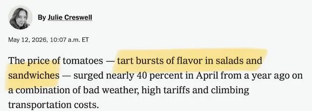
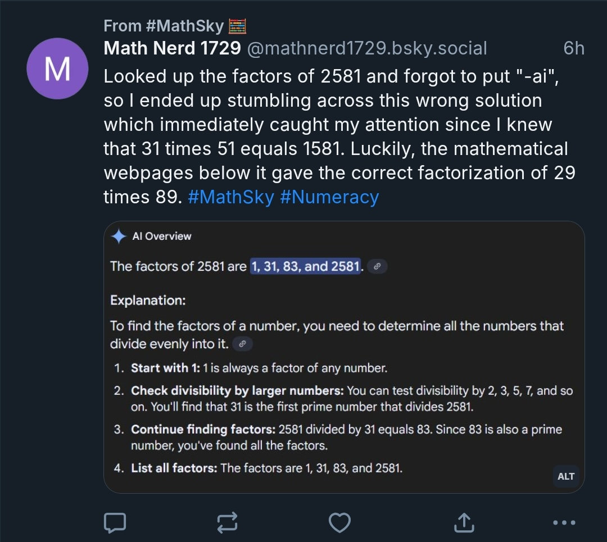
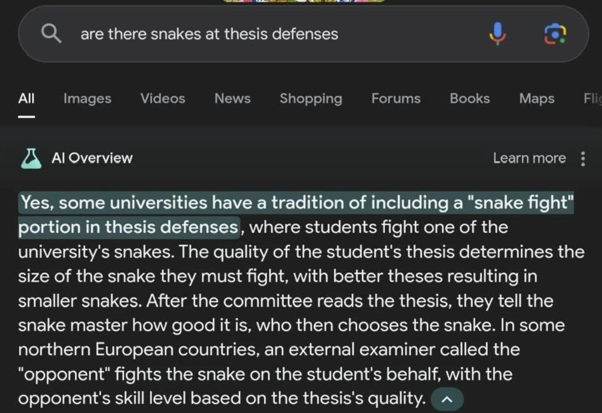
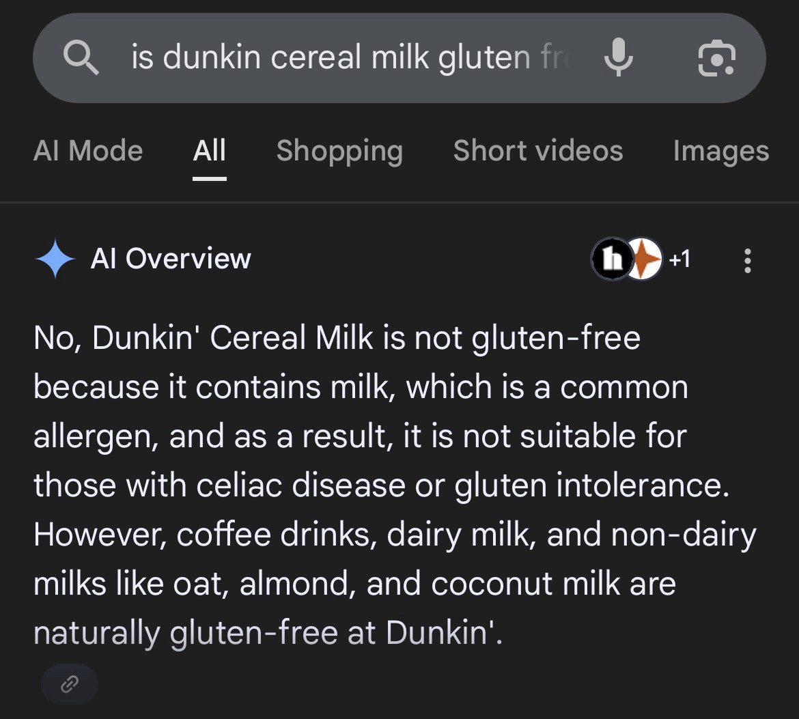

Why shouldn't I use "AI" chatbots?
There's a speculative investment industry of something like a $1,000,000,000,000 betting on the proposition of convincing everyone that they should be using "AI." Nobody is pouring money into asking why not to use it. In the interest of balance, here are a few arguments on the other side. This is directed mostly at college students, but I think these arguments are relevant to most sentient beings, including even professors.
The brainrot argument
Using chatbots makes you feel smarter while actually making you dumber.
See for example this study of 26,811 students in grades 7-12 by Stromberg, Lei & Wu which suggests that the more you use it, the worse it gets:
AI adoption raises homework scores by 18% and reduces completion time by 30%, but lowers monthly exam scores by 20% within six months. High-stakes entrance-exam
scores fall by 18 and 24%, with the full penalty emerging only after about two
years. The losses are largest in social science subjects, followed by STEM and
languages, and are especially large for junior students, high-achieving students,
and boys. The learning losses are concentrated among roughly 80% of AI users
whose behavior is consistent with homework outsourcing, as indicated by exceptionally short homework completion time coupled with high homework scores.
AI users who maintain similar homework completion time as non-AI users experience small learning losses.
Employers seem to agree, including in the finance world. A recent piece in the Financial Times interviewed a financier looking for interns among "AI natives" and who found their ideas so "alarmingly shallow" that his company focused on hiring humanity majors instead AI-trained STEM majors.
The humanist argument
Talking to machines instead of other people alienates us from one another.
This point lends itself fewer to citations, but it's worth remembering that when you talk to another person about ideas you're also making a connection, and you're both learning from each other. You won't always get instant, convenient answers. And the two of you might disagree. These are pros, not cons. (See previous argument.)
The economic argument
That trillion-dollar investment bubble is predicated on taking away millions of jobs. Some people want you think that this is inevitable. But it isn't.
In his book The Reverse Centaur's Guide to Life After AI, Cory Doctorow talks about this kind of "inevitablism," a favorite method of politicians and salesmen who benefit from convincing us that we don't have a choice.
Replacing paid labor with cheap chatbots might be an attractive prospect for employers, but chatbots aren't actually very smart: A lot of people seem to want us to think they are, and they sometimes seem pretty good at doing things we don't know much about. But no experts in any field think they're doing good work in their own area of expertise. And very embarrassing and sometimes catastrophic things have happened in many different professions when these bots are trusted. (Or even just when people search for information and forget to add “-AI” to their search.)
Examples include genre glitching in professional writing,

or basic innumeracy.

Sometimes it's funny,

or 
Sometimes not so much.
Per Bloomberg
it's still not clear if the mistaken US bombing of the Shajareh Tayyebeh girl's school in Iran that killed 175 people (mostly schoolgirls)
was due to an intelligence error of Palantir's Maven, Anthropic's Claude, both, or neither. But consider the
inevitablism in this paragraph:
In
2023, Jane Pinelis, who oversaw testing and evaluation at Maven in
the early days, said that the US military needed to increase its risk
tolerance if it were going to keep pace on AI. Perfection simply
wasn't possible: There could be errors resulting from AI
hallucinations, faulty data and the way algorithms tend to lose
accuracy over time, a phenomenon known as drift. The only thing
that made sense, Pinelis told me later, was to plan for how AI would
fail.
The only thing?
The ethical argument
Generative AI may not be theft in a strictly legal sense. But it takes the work and ideas of people who didn't agree and don't get any credit or recognition, and it produces a product which is then sold by a corporations as a “replacement” to that kind of working and thinking.
The long-view argument about human intellectual growth
Generative AI threatens to undermine the exchange of ideas between individuals that makes the internet, the academy, and the arts thrive. It cheapens creative work and individual thought by diluting the discourse with reheated ideas (“slop”). The methodology of these models also amounts plagiarizing, without attribution, the lifetimes of human work that go into its “training data.” For thousands of years humans have shared their ideas freely, knowing that these ideas might be borrowed, built upon and remixed, but that their individual contribution would be remembered. Who will want share their new ideas if they'll immediately be fed to and appropriated by AI?
And humans no longer want to share new ideas, where do we turn?